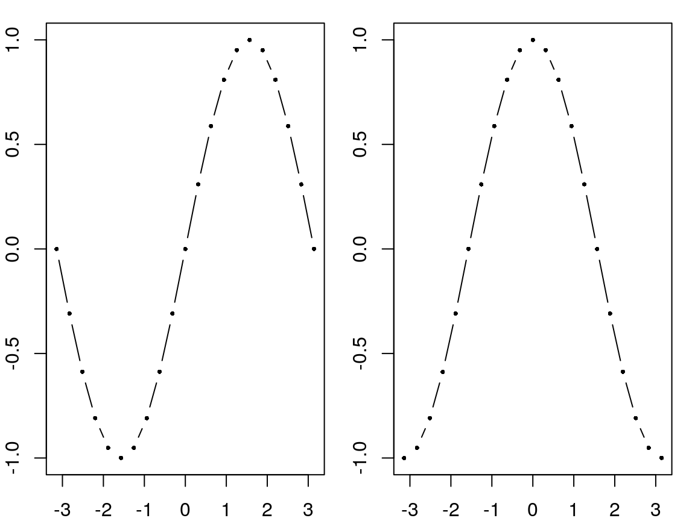

Today is a good day to start documenting what this package (kwb.utils) is good for. I would like to start with a complete list of the names of the functions that are contained in this package. But how can I get such a list?
How to get an overview of functions in a package?
In fact, I do not know (any more) how to achieve this. However, I know that this package contains a function assignPackageObjects() that copies all the objects that are contained in a package (including all its functions) to the global environment. By inspecting the definition, i.e. the body, of this function, we can learn how this function works. Therefore, just type the function’s name, without parentheses, and press Enter:
kwb.utils::assignPackageObjects
#> function(package)
#> {
#> for (name in ls(getNamespace(package))) {
#> object <- get(name, envir = asNamespace(package), inherits = FALSE)
#> assignGlobally(name, object)
#> }
#> }
#> <environment: namespace:kwb.utils>As the code reveals, the function loops through the values that are returned by ls(getNamespace(package)) where package is the name of the package. This is exacly what we need. We can use this code to get the names of all objects in the “kwb.utils” package. Let’s store these names in the variable object_names:
object_names <- ls(getNamespace("kwb.utils"))
length(object_names)
#> [1] 227Wow! There are 227 objects (functions) defined in this package. So where should I start?
Let’s have a look at the first six functions:
head(object_names)
#> [1] "addClass" "addRowWithName" "addSuffixToColumns"
#> [4] "allAreEqual" "allAreIdentical" "almostEqual"One Function a day…
There are 3 functions that are prefixed with add. These functions are explained in the following.
Function addClass()
The function addClass adds an element to the class attribute of an object. You may never have heard about the class attribute. That’s ok. It allows you to assign a user-defined class to an object. By doing so, you can do some nice stuff, for example:
# Define your own print function for objects of class "birthday"
print.birthday <- function(x) {
print(sprintf("It's your birthday: %s!", x))
}
# Define a birthday string and print it
x <- "January 14"
print(x)
#> [1] "January 14"
# Now, set the class attribute to "birthday" and print again!
x <- kwb.utils::addClass(x, "birthday")
print(x)
#> [1] "It's your birthday: January 14!"
Function addRowWithName()
This function does no more than adding a row to a data frame with rbind and giving it a name:
x <- data.frame(value = 10:11)
new_row <- data.frame(value = sum(x$value))
kwb.utils::addRowWithName(x, new_row, row.name = "total")
#> value
#> 1 10
#> 2 11
#> total 21
Function addSuffixToColumns()
This function adds a postfix to the column names of a data frame. This may be useful when column-binding data frames. The function can be used to indicate the origin of each column by giving it a suffix related to the data frame that it originates from.
# Define a first data frame
data_frame_1 <- data.frame(
id = 1:2,
first = c("Peter", "Mary"),
last = c("Miller", "Smith")
)
# Define a second data frame
data_frame_2 <- data.frame(
height_cm = c(181, 171),
weigth_kg = c(68, 59)
)
# Column-bind the data frames, after giving their columns a unique suffix
cbind(
kwb.utils::addSuffixToColumns(data_frame_1, "_1"),
kwb.utils::addSuffixToColumns(data_frame_2, "_2")
)
#> id_1 first_1 last_1 height_cm_2 weigth_kg_2
#> 1 1 Peter Miller 181 68
#> 2 2 Mary Smith 171 59Cool, I explained three functions. There are only 224 left! The next three functions, allAreEqual(), allAreIdentical(), and almostEqual() belong to a group of functions that return a vector of logical. They are explained next.
Function allAreEqual()
This function checks if all values in a vector are equal to each other:
kwb.utils::allAreEqual(c(1, 1, 1, 1))
#> [1] TRUE
kwb.utils::allAreEqual(c(1, 1, 1, 2))
#> [1] FALSE
Function allAreIdentical()
This function checks if all elements in a list are identical to each other. It may be useful when checking whether different versions of a function (that may, e.g., be created during code cleaning) return exactly the same, when being given the same inputs.
# Define different functions that are intended to do the same
get_list_1 <- function(a, b) list(a = a, b = b)
get_list_2 <- function(a, b) stats::setNames(list(a, b), c("a", "b"))
get_list_3 <- function(a, b) c(list(a = a), b = b)
get_list_4 <- function(a, b) c(list(a = a), list(b = b))
# Call the functions with identical arguments and put the results into a list
results <- list(
get_list_1(1, 2:3),
get_list_2(1, 2:3),
get_list_3(1, 2:3),
get_list_4(1, 2:3)
)
# Not all results are the same...
kwb.utils::allAreIdentical(results)
#> [1] FALSE
# ... but all except the third:
kwb.utils::allAreIdentical(results[-3])
#> [1] TRUE
Function almostEqual()
Take care when comparing floating point numbers! Whether floating point numbers are assumed to be equal or not, depends on how they were calculated. This is shown in the following example:
one_third_1 <- 1/3
one_third_2 <- 1 - 2/3
# Even though mathematically correct, they are not equal in R:
one_third_1 == one_third_2
#> [1] FALSEWith almostEqual() numbers are compared by tolerating a small difference between the numbers. This difference can be set with the argument tolerance.
# The numbers are almost equal (with the default tolerance of 1e-12):
kwb.utils::almostEqual(one_third_1, one_third_2)
#> [1] TRUE
# It depends on the tolerance if they are treated as equal:
kwb.utils::almostEqual(one_third_1, one_third_2, tolerance = 1e-17)
#> [1] FALSE
Function appendSuffix()
This function adds a suffix to all elements of a vector of character. It is mainly a shortcut to paste0(values, suffix) but allows to define values to be omitted:
# Define a vector of character
values <- c("id", letters[1:5])
# Add a suffix to all elements except "id"
kwb.utils::appendSuffix(values, "_value", valuesToOmit = "id")
#> [1] "id" "a_value" "b_value" "c_value" "d_value" "e_value"
Function arglist()
The main purpose of the package “kwb.utils” is to provide functions that allow for writing cleaner and safer code. One main characteristic of clean code is that it is free or at least almost free of duplication. This is a very hard goal to achieve! But we should try our best!
Have you ever seen something like the following?
x <- seq(-pi, pi, pi/10)
par(mfrow = c(1, 2), mar = c(2, 2, 1, 1))
plot(x, sin(x), xlab = "x", ylab = "sin(x)", pch = 16, type = "b", cex = 0.5)
plot(x, cos(x), xlab = "x", ylab = "cos(x)", pch = 16, type = "b", cex = 0.5)
Do you spot the repetition? What if you want to change the plot character pch or the type of the plot or the character extension factor cex in both plots at the same time?
# Define common arguments
common <- list(x = x, pch = 16, xlab = "x", type = "b", cex = 0.5)
# Call the plot function with the common arguments, extended by
# call-specific arguments
par(mfrow = c(1, 2), mar = c(2, 2, 1, 1))
do.call(plot, kwb.utils::arglist(common, y = sin(x), ylab = "sin(x)"))
do.call(plot, kwb.utils::arglist(common, y = cos(x), ylab = "cos(x)"))
The function arglist() merges the contents of one or more lists by allowing to overwrite existing list elements. In the above example, the list of common arguments is just extended. Elements in this list could also be overwritten, such as the argument cex in the following:
do.call(
what = plot,
args = kwb.utils::arglist(common, y = sin(x), ylab = "sin(x)", cex = 1)
)
This pattern of calling a function with an extended argument list is so common that I wrote a function callWith() that allows to write the above shorter:
kwb.utils::callWith(plot, common, y = sin(x), ylab = "sin(x)", cex = 1)
But this will be explained later…
Function asColumnList()
This function converts a matrix into a list of its columns. This is useful when you want to loop through the columns of a matrix m with lapply(). You could also loop through the columns with apply(m, MARGINS = 2). However, the usage of lapply() should be preferred to the usage of apply(), as demonstrated in the following example:
# Define and show a very simple matrix
(m <- matrix(1:6, nrow = 2))
#> [,1] [,2] [,3]
#> [1,] 1 3 5
#> [2,] 2 4 6
# Define functions that return/count the values above a threshold.
# These functions are to be applied to each column of the matrix
get_above <- function(x, threshold) x[x > threshold]
count_above <- function(x, threshold) sum(x > threshold)With the first function, the two approaches return identical results:
# Approach 1: loop through columns using asColumnList() and lapply()
result_1 <- lapply(kwb.utils::asColumnList(m), get_above, 3)
str(result_1)
#> List of 3
#> $ : int(0)
#> $ : int 4
#> $ : int [1:2] 5 6
# Approach 2: loop through columns using apply()
result_2 <- apply(m, 2, get_above, 3)
str(result_2)
#> List of 3
#> $ : int(0)
#> $ : int 4
#> $ : int [1:2] 5 6However, with the second function, the two approaches return differing results:
# Approach 1: loop through columns using asColumnList() and lapply()
result_1 <- lapply(kwb.utils::asColumnList(m), count_above, 3)
str(result_1)
#> List of 3
#> $ : int 0
#> $ : int 1
#> $ : int 2
# Approach 2: loop through columns using apply()
result_2 <- apply(m, 2, count_above, 3)
str(result_2)
#> int [1:3] 0 1 2The first approach using lapply() returns a list, whereas the second approach using apply() returns a vector. The first approach should be preferred because the user can trust that the result will always be a list, independent of the function that is called within the loop. The preferred function lapply() requires an object that it can loop through and this is what asColumnList() provides!
Function asNoFactorDataFrame
This function is a shortcut to as.data.frame(..., stringsAsFactors = FALSE). Using this function may slightly improve the readability of a script (as the number of arguments passed to the function is reduced):
m <- matrix(letters[1:6], nrow = 2)
result_1 <- kwb.utils::asNoFactorDataFrame(m)
resutl_2 <- as.data.frame(m, stringsAsFactors = FALSE)
identical(result_1, result_2)
#> [1] FALSE
Function asRowList()
This function converts a matrix into a list of its rows. See asColumnList() for an explanation of when this may be useful.
Function assertRowsAndColumns()
If you want to do calculations with a set of matrices it is important that all matrices have the same dimensions and that rows and columns of the same name are found at the same row and column indices, respectively. The function assertRowsAndColumns() takes a matrix as input and returns a matrix as output. The function guarantees that the returned matrix contains rows and columns of requested names in requested orders. It does so by
- creating rows/columns that are requested but not contained in the input matrix,
- removing rows/columns that are contained in the input matrix but not requested,
- moving rows/columns that are contained in the input matrix but not in the requested order.
Imagine three different matrices, each of with is created with createMatrix(), another function from this package:
(m_1 <- kwb.utils::createMatrix(c("a", "c"), c("x", "y"), value = 1))
#>
#> x y
#> a 1 1
#> c 1 1
(m_2 <- kwb.utils::createMatrix(c("a", "b"), c("x", "z"), value = 2))
#>
#> x z
#> a 2 2
#> b 2 2
(m_3 <- kwb.utils::createMatrix(c("b", "c"), c("y", "z"), value = 3))
#>
#> y z
#> b 3 3
#> c 3 3Each matrix has two out of three possible rows a, b and c and has two out of three possible columns x, y and z. You can now unify the shape of all matrices by means of assertRowsAndColumns(), specifying the rows and columns to be required:
row_names <- c("a", "b", "c")
col_names <- c("x", "y", "z")
(m_1 <- kwb.utils::assertRowsAndColumns(m_1, row_names, col_names))
#>
#> x y z
#> a 1 1 0
#> b 0 0 0
#> c 1 1 0
(m_2 <- kwb.utils::assertRowsAndColumns(m_2, row_names, col_names))
#>
#> x y z
#> a 2 0 2
#> b 2 0 2
#> c 0 0 0
(m_3 <- kwb.utils::assertRowsAndColumns(m_3, row_names, col_names))
#>
#> x y z
#> a 0 0 0
#> b 0 3 3
#> c 0 3 3Missing rows or columns are inserted and filled with the value that is given in the argument fill_value (defaulting to 0, as can be seen above). Now, the matrices can e.g. be summed up:
m_1 + m_2 + m_3
#>
#> x y z
#> a 3 1 2
#> b 2 3 5
#> c 1 4 3Or, they can be put into a three dimensional array:
array_3d <- array(
c(m_1, m_2, m_3),
dimnames = list(row_names, col_names, 1:3),
dim = c(3, 3, 3)
)
array_3d
#> , , 1
#>
#> x y z
#> a 1 1 0
#> b 0 0 0
#> c 1 1 0
#>
#> , , 2
#>
#> x y z
#> a 2 0 2
#> b 2 0 2
#> c 0 0 0
#>
#> , , 3
#>
#> x y z
#> a 0 0 0
#> b 0 3 3
#> c 0 3 3